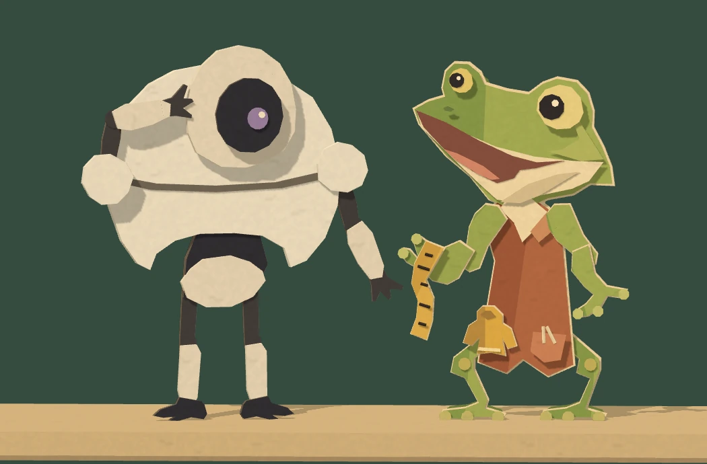
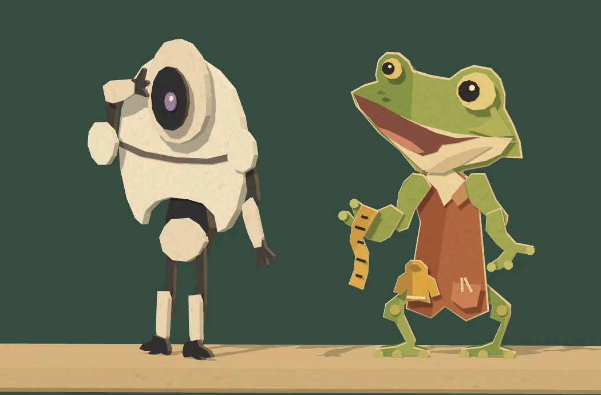
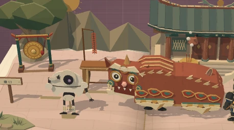
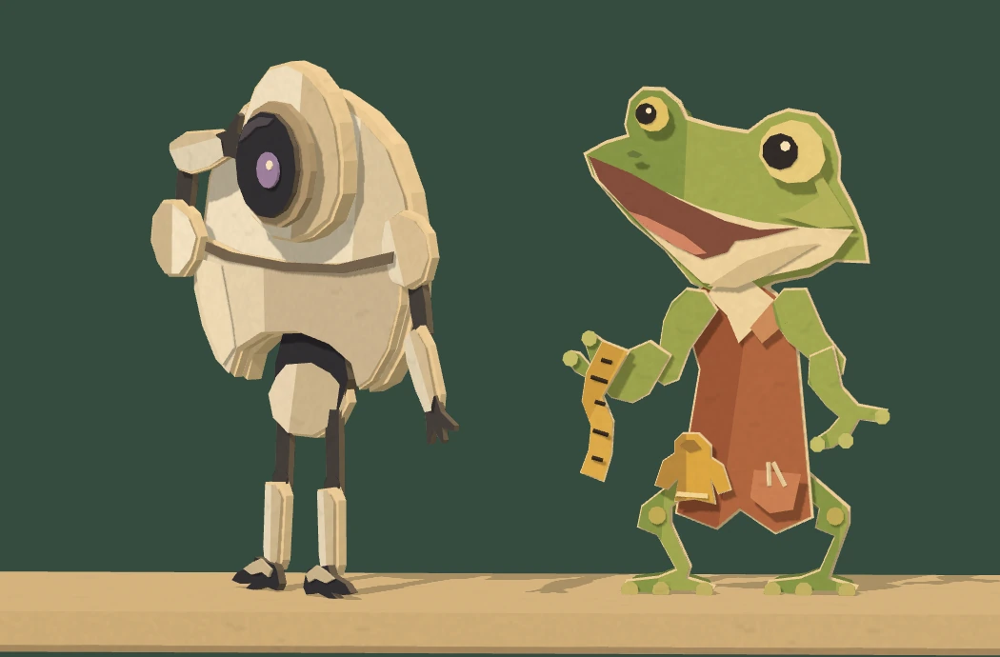
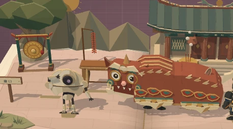
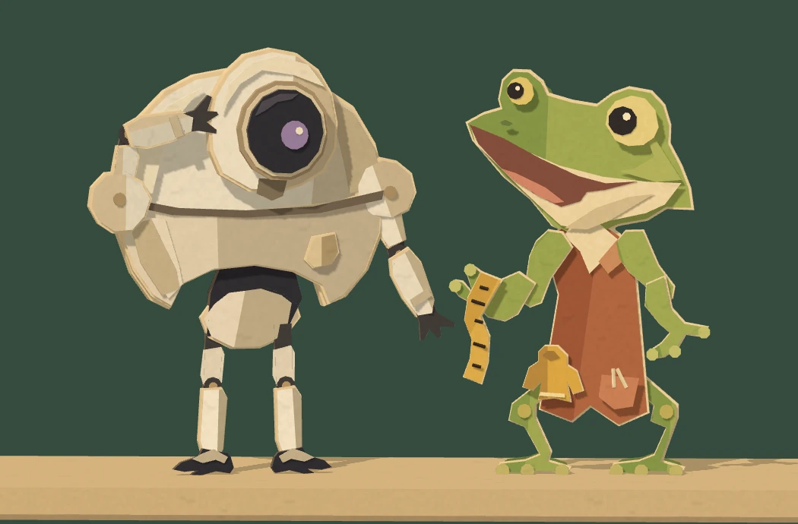
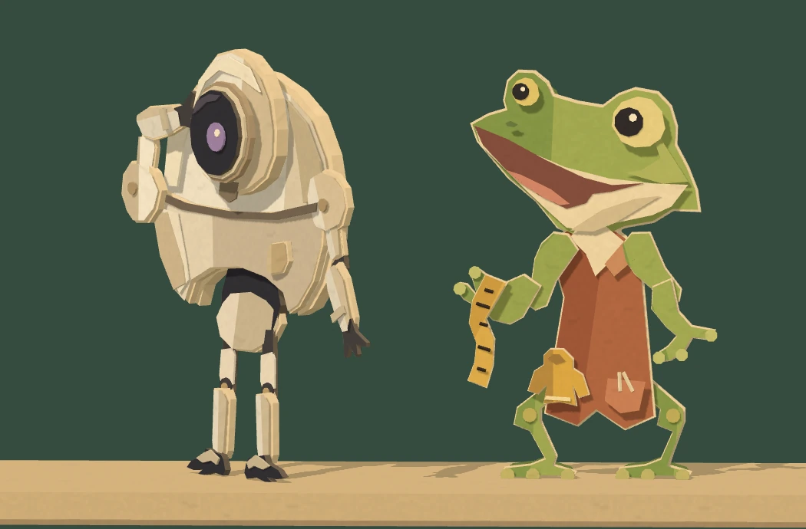
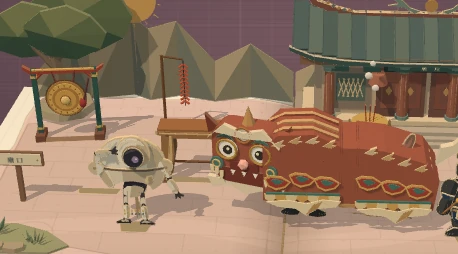

A
一片剪影


胸腹共用一片米白色卡，腰線用墨色印上。抬手時，黑紙手指從身體輪廓探出來。

街角的決策智慧 ／ 紙偶試樣
這是巡燈員一眨早期試演的三款紙偶。當時選了 B 款雙層摺面。讓一眨和改衣師點點站在一起，就能比較兩個角色的摺痕和紙邊。


胸腹共用一片米白色卡，腰線用墨色印上。抬手時，黑紙手指從身體輪廓探出來。


把下腹另剪一片，輕摺出明暗。單眼鑲一圈牛皮紙，與點點的眼眶用同一種剪法。



在額頭與腹側再拼幾片紙。鏡頭有內外兩圈，手肘、膝蓋露出小紙鉚釘。
